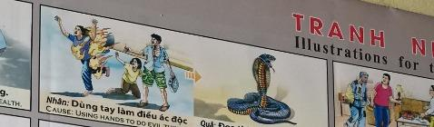

Las Manos del Mal The Hands of Evil Le mani del male 邪恶之手 أيدي الشر Руки зла Die Hände des Bösen Les mains du mal 悪の手 As mãos do mal
La violencia despoja al alma de su forma humana. Violence strips the soul of its human form. La violenza spoglia l'anima della sua forma umana. 暴力剥夺了人类的灵魂。 فالعنف يجرد النفس من شكلها الإنساني. Насилие лишает душу человеческой формы. Gewalt entzieht der Seele ihre menschliche Form. La violence prive l'âme de sa forme humaine. 暴力は魂を人間の形から剥ぎ取ります。 A violência despoja a alma da sua forma humana. Bạo lực tước bỏ hình dáng con người của linh hồn.
El uso de la fuerza física para dañar o arrebatar genera un nudo kármico de gran densidad. Al actuar con malicia, el espíritu se aleja de la forma humana, diseñada para el servicio y la caricia.
Using physical force to harm or take away generates a karmic knot of great density. By acting with malice, the spirit moves away from the human form, designed for service and affection.
L'uso della forza fisica per nuocere o portare via crea un fitto nodo karmico. Agendo con malizia, lo spirito si allontana dalla forma umana, destinata al servizio e alla carezza.
使用武力来伤害或夺走会造成密集的业结。通过恶意行事，灵魂远离了为服务和爱抚而设计的人类形态。
إن استخدام القوة الجسدية للإيذاء أو السلب يخلق عقدة كارمية كثيفة. من خلال التصرف بشكل خبيث، تبتعد الروح عن الشكل البشري المصمم للخدمة والمداعبة.
Применение физической силы с целью причинить вред или отнять создает плотный кармический узел. Действуя злонамеренно, дух удаляется от человеческого образа, предназначенного для служения и ласки.
Der Einsatz physischer Gewalt zum Schaden oder Wegnehmen erzeugt einen dichten karmischen Knoten. Durch böswilliges Handeln entfernt sich der Geist von der menschlichen Form, die auf Dienst und Liebkosung ausgelegt ist.
L’utilisation de la force physique pour nuire ou enlever crée un nœud karmique dense. En agissant avec méchanceté, l'esprit s'éloigne de la forme humaine, conçue pour le service et la caresse.
物理的な力を使って危害を加えたり、奪ったりすると、密なカルマの結び目が形成されます。悪意を持って行動することによって、精神は奉仕と愛撫のために設計された人間の姿から離れます。
O uso da força física para prejudicar ou afastar cria um denso nó cármico. Ao agir com maldade, o espírito se afasta da forma humana, destinada ao serviço e ao carinho.
Việc sử dụng vũ lực để làm hại hoặc lấy đi sẽ tạo ra một nút thắt nghiệp chướng dày đặc. Bằng cách hành động ác ý, linh hồn rời xa hình dạng con người, vốn được thiết kế để phục vụ và vuốt ve.
Aquel que usó sus manos para el mal renace, en la tradición de Da Nang, como un ser sin ellas. Una cobra condenada a arrastrarse, metáfora de una conciencia despojada de su capacidad de construir.
The one who used their hands for evil is reborn, in the Da Nang tradition, as a being without them. A cobra condemned to crawl, a metaphor for a consciousness stripped of its ability to build.
Colui che ha usato le sue mani per fare del male rinasce, nella tradizione di Da Nang, come un essere senza di esse. Un cobra condannato a strisciare, metafora di una coscienza privata della sua capacità di costruire.
按照岘港的传统，用双手作恶的人会重生为没有双手的人。一条注定要爬行的眼镜蛇，象征着一种被剥夺了构建能力的意识。
من استخدم يديه في الشر، يولد من جديد، في تقليد دا نانغ، ككائن بدونهما. كوبرا محكوم عليها بالزحف، كناية عن وعي مجرد من القدرة على البناء.
Тот, кто использовал свои руки во зло, в традиции Дананга перерождается существом без них. Кобра, обреченная ползать, метафора сознания, лишенного способности строить.
Wer seine Hände zum Bösen benutzte, wird in der Da Nang-Tradition als ein Wesen ohne Hände wiedergeboren. Eine zum Kriechen verdammte Kobra, eine Metapher für ein Bewusstsein, dem die Fähigkeit zum Aufbau entzogen ist.
Celui qui a utilisé ses mains pour le mal renaît, dans la tradition de Da Nang, comme un être sans elles. Un cobra condamné à ramper, métaphore d’une conscience dépouillée de sa capacité à construire.
悪のために手を使った者は、ダナンの伝統に従って、手を持たない存在として生まれ変わります。這うことを宣告されたコブラ、構築する能力を剥奪された意識の比喩。
Aquele que usou as mãos para o mal renasce, na tradição Da Nang, como um ser sem elas. Uma cobra condenada a rastejar, metáfora de uma consciência despojada de capacidade de construção.
Theo truyền thống Đà Nẵng, người sử dụng đôi tay của mình để làm điều ác sẽ tái sinh thành một sinh vật không có đôi tay. Một con rắn hổ mang bị buộc phải bò, một phép ẩn dụ cho ý thức bị tước bỏ khả năng xây dựng.
Las Manos del Alfarero
The Potter's Hands
Le mani del vasaio
波特之手
أيدي الخزاف
Руки Гончара
Die Hände des Töpfers
Les mains du potier
陶芸家の手
As mãos do oleiro
Bàn tay của người thợ gốm
Imagina unas manos fuertes, hechas por el Creador para acariciar, ayudar y construir. Pero un joven decidió usar las suyas solo para golpear y robar el pan ajeno. Creía que sus puños eran su mayor poder contra el mundo...
El gran tejedor de destinos, con tristeza infinita, le retiró ese regalo. En su siguiente latido en la historia, despertó como una criatura que debía arrastrarse por el polvo de la tierra. No tenía manos para defenderse; no tenía cómo abrazar. Estaba completamente indefenso, viviendo la misma fragilidad a la que sometió a sus víctimas.
Y al verse sin el medio para ayudar al prójimo, valoró hasta las lágrimas la belleza del tacto. Esta dolorosa lección no era una condena vacía, sino el horno donde su alma se ablandaba... garantizando que, cuando volviera a tener manos, nunca más se cerrarían en un puño, sino que siempre estarían abiertas para acariciar y sanar.
Imagine strong hands, made by the Creator to caress, help and build. But a young man decided to use his only to hit and steal other people's bread. He believed that his fists were his greatest power against the world...
The great weaver of destiny, with infinite sadness, withdrew that gift. In his next heartbeat in history, he woke up like a creature that had to crawl through the dust of the earth. He had no hands to defend himself; I had no way to hug. He was completely helpless, experiencing the same fragility to which he subjected his victims.
And when he found himself without the means to help his neighbor, he valued the beauty of touch to the point of tears. This painful lesson was not an empty condemnation, but the furnace where his soul was softened... guaranteeing that, when he had hands again, they would never again clench into a fist, but would always be open to caress and heal.
Immagina mani forti, fatte dal Creatore per accarezzare, aiutare e costruire. Ma un giovane decise di usare il suo solo per picchiare e rubare il pane altrui. Credeva che i suoi pugni fossero il suo più grande potere contro il mondo...
Il grande tessitore del destino, con infinita tristezza, ritirò quel dono. Nel suo successivo battito cardiaco nella storia, si svegliò come una creatura che doveva strisciare nella polvere della terra. Non aveva mani per difendersi; Non avevo modo di abbracciarmi. Era completamente indifeso, sperimentando la stessa fragilità a cui sottoponeva le sue vittime.
E quando si trovò senza mezzi per aiutare il prossimo, apprezzò fino alle lacrime la bellezza del tatto. Questa dolorosa lezione non fu una vuota condanna, ma la fornace in cui la sua anima si addolcì... garantendo che, quando avesse avuto di nuovo le mani, non si sarebbero mai più chiuse a pugno, ma sarebbero state sempre aperte alla carezza e alla guarigione.
想象一下，造物主创造了一双有力的手来爱抚、帮助和建设。但一个年轻人却决定利用自己的唯一去打、偷别人的面包。他相信，他的拳头就是他对抗世界的最大力量……
伟大的命运编织者带着无限的悲伤，收回了这份礼物。在他历史上的下一次心跳中，他像一只必须在地球尘埃中爬行的生物一样醒来。他没有双手来保护自己；我没有办法拥抱。他完全无助，经历着他对待受害者时同样的脆弱。
当他发现自己无力帮助邻居时，他珍视这种美妙的触摸，甚至热泪盈眶。这个惨痛的教训不是空洞的谴责，而是软化他灵魂的熔炉……保证当他再次拥有双手时，它们将永远不会再握紧拳头，而是永远敞开心扉去爱抚和治愈。
تخيل أيديًا قوية، صنعها الخالق للمداعبة والمساعدة والبناء. لكن شابًا قرر استخدام سلاحه الوحيد لضرب وسرقة خبز الآخرين. كان يعتقد أن قبضاته كانت أعظم قوة له ضد العالم ...
لقد سحب حائك القدر العظيم تلك الهدية بحزن لا نهاية له. وفي نبضة قلبه التالية في التاريخ، استيقظ كمخلوق عليه أن يزحف عبر غبار الأرض. لم يكن لديه أيادي للدفاع عن نفسه؛ لم يكن لدي أي وسيلة للعناق. لقد كان عاجزًا تمامًا، ويعاني من نفس الهشاشة التي أخضع لها ضحاياه.
وعندما وجد نفسه بلا وسيلة لمساعدة جاره، كان يقدر جمال اللمسة إلى حد البكاء. لم يكن هذا الدرس المؤلم إدانة فارغة، بل كان الفرن الذي خففت فيه روحه... مما يضمن أنه، عندما تعود يديه مرة أخرى، لن تقبضا مرة أخرى أبدًا، بل ستكونان دائمًا مفتوحتين للمداعبة والشفاء.
Представьте себе сильные руки, созданные Создателем, чтобы ласкать, помогать и созидать. Но молодой человек решил использовать свою лишь для того, чтобы ударить и украсть чужой хлеб. Он верил, что его кулаки были его величайшей силой против всего мира...
Великий ткач судьбы с бесконечной печалью забрал этот дар. В следующий удар своего сердца в истории он проснулся, как существо, которому пришлось ползти по земной пыли. У него не было рук, чтобы защитить себя; У меня не было возможности обнять. Он был совершенно беспомощен, испытывая ту же хрупкость, которой подвергал своих жертв.
А когда он оказался без средств помочь ближнему, то оценил красоту прикосновения до слез. Этот мучительный урок был не пустым осуждением, а печью, где смягчилась его душа... гарантируя, что, когда у него снова появятся руки, они никогда больше не сжимаются в кулак, а всегда будут открыты для ласки и исцеления.
Stellen Sie sich starke Hände vor, die der Schöpfer geschaffen hat, um zu streicheln, zu helfen und aufzubauen. Aber ein junger Mann beschloss, sein einziges Ziel zu nutzen, um das Brot anderer Leute zu schlagen und zu stehlen. Er glaubte, dass seine Fäuste seine größte Macht gegen die Welt seien ...
Der große Weber des Schicksals zog dieses Geschenk mit unendlicher Trauer zurück. In seinem nächsten Herzschlag in der Geschichte erwachte er wie ein Geschöpf, das durch den Staub der Erde kriechen musste. Er hatte keine Hände, um sich zu verteidigen; Ich hatte keine Möglichkeit, mich zu umarmen. Er war völlig hilflos und erlebte die gleiche Zerbrechlichkeit, der er seine Opfer aussetzte.
Und als ihm die Mittel fehlten, seinem Nächsten zu helfen, schätzte er die Schönheit der Berührung so sehr, dass ihm die Tränen kamen. Diese schmerzhafte Lektion war keine leere Verurteilung, sondern der Ofen, in dem seine Seele erweicht wurde ... die Garantie dafür, dass er, wenn er wieder Hände hätte, diese nie wieder zur Faust ballen würde, sondern immer offen für Streicheleinheiten und Heilung sein würde.
Imaginez des mains fortes, faites par le Créateur pour caresser, aider et construire. Mais un jeune homme a décidé de n'utiliser le sien que pour frapper et voler le pain des autres. Il croyait que ses poings étaient sa plus grande puissance contre le monde...
Le grand tisserand du destin, avec une infinie tristesse, retira ce cadeau. Lors du prochain battement de cœur de l'histoire, il s'est réveillé comme une créature qui devait ramper dans la poussière de la terre. Il n'avait pas de mains pour se défendre ; Je n'avais aucun moyen de faire un câlin. Il était complètement impuissant, éprouvant la même fragilité à laquelle il soumettait ses victimes.
Et lorsqu’il s’est retrouvé sans moyens d’aider son prochain, il a apprécié la beauté du toucher jusqu’aux larmes. Cette douloureuse leçon n'était pas une vaine condamnation, mais la fournaise où son âme s'adoucit... garantissant que, lorsqu'il aurait à nouveau des mains, elles ne serreraient plus jamais le poing, mais seraient toujours ouvertes pour caresser et guérir.
愛撫し、助け、構築するために創造主によって作られた強い手を想像してみてください。しかし、ある若者は、自分の武器を他人のパンを叩いて盗むことだけにしようと決心しました。彼は自分の拳が世界に対する最大の力であると信じていた...
偉大な運命の織り手は、限りない悲しみを抱えて、その贈り物を撤回しました。歴史上の次の鼓動で、彼は地球の塵の中を這わなければならなかった生き物のように目覚めました。彼には身を守るための手はなかった。抱き締める術もなかった。彼は完全に無力で、犠牲者たちと同じ脆弱性を経験していました。
そして、隣人を助ける手段がないことに気づいたとき、彼は涙が出るほど触れ合いの美しさを大切にしました。この痛ましい教訓は空虚な非難ではなく、彼の魂を和らげる炉だった…彼が再び手を握ったとき、彼らは再び拳を握り締めることはなく、常に愛撫と癒しを受け入れることを保証する。
Imagine mãos fortes, feitas pelo Criador para acariciar, ajudar e construir. Mas um jovem decidiu usar o seu apenas para bater e roubar o pão dos outros. Ele acreditava que seus punhos eram seu maior poder contra o mundo...
Hãy tưởng tượng những bàn tay mạnh mẽ do Tạo hóa tạo ra để vuốt ve, giúp đỡ và xây dựng. Nhưng một thanh niên đã quyết định dùng gậy của mình để đánh và cướp bánh mì của người khác. Anh ta tin rằng nắm đấm của mình là sức mạnh lớn nhất của anh ta để chống lại thế giới...
O grande tecelão do destino, com infinita tristeza, retirou esse presente. Em seu próximo batimento cardíaco na história, ele acordou como uma criatura que teve que rastejar pela poeira da terra. Ele não tinha mãos para se defender; Eu não tinha como abraçar. Estava completamente desamparado, experimentando a mesma fragilidade a que submetia as suas vítimas.
Người thợ dệt vĩ đại của số phận, với nỗi buồn vô hạn, đã rút lại món quà đó. Trong nhịp tim tiếp theo trong lịch sử, anh thức dậy như một sinh vật phải bò qua bụi đất. Anh ta không có tay để tự vệ; Tôi không có cách nào để ôm. Anh ta hoàn toàn bất lực, trải qua sự mong manh giống như cách anh ta phải chịu đựng những nạn nhân của mình.
E quando se viu sem meios para ajudar o próximo, valorizou a beleza do toque até às lágrimas. Esta dolorosa lição não foi uma condenação vazia, mas a fornalha onde sua alma foi amolecida... garantindo que, quando ele voltasse a ter mãos, elas nunca mais se fechariam em punho, mas estariam sempre abertas para acariciar e curar.
Và khi nhận thấy mình không có phương tiện để giúp đỡ người hàng xóm, anh đã trân trọng vẻ đẹp của sự đụng chạm đến mức rơi nước mắt. Bài học đau đớn này không phải là một lời lên án trống rỗng, mà là lò lửa nơi tâm hồn anh trở nên mềm yếu… đảm bảo rằng, khi anh có lại đôi bàn tay, chúng sẽ không bao giờ siết chặt thành nắm đấm nữa mà sẽ luôn rộng mở để vuốt ve và chữa lành.
La Inspiración Original
The Original Inspiration
L'Ispirazione Originale
最初的灵感
الإلهام الأصلي
Оригинальное вдохновение
Die Ursprüngliche Inspiration
L'Inspiration Originale
元のインスピレーション
A Inspiração Original
Nguồn cảm hứng ban đầu
La historia que hemos relatado en este capítulo está inspirada por el pasaje de la escena original de los murales «Tranh Nhân Quả» (Ilustraciones del Karma) del Templo Linh Ung en Da Nang, capturado en la imagen.
La storia che abbiamo raccontato in questo capitolo è ispirata al passaggio della scena originale dei murali “Tranh Nhân Quả” (Illustrazioni del Karma) del Tempio Linh Ung a Da Nang, catturati nell'immagine.
我们在本章中讲述的故事的灵感来自图像中捕获的岘港灵应寺“Tranh Nhân Quả”（业力插图）壁画的原始场景。
القصة التي رويناها في هذا الفصل مستوحاة من مقطع من المشهد الأصلي لجداريات "ترانه نهان كو" (الرسوم التوضيحية للكارما) لمعبد لينه أونغ في دا نانغ، الملتقطة في الصورة.
История, которую мы рассказали в этой главе, вдохновлена отрывком из оригинальной сцены фрески «Тран Нхан Ку» («Иллюстрации кармы») храма Линь Унг в Дананге, запечатленной на изображении.
Die Geschichte, die wir in diesem Kapitel erzählt haben, ist inspiriert von der Passage aus der Originalszene der Wandgemälde „Tranh Nhân Quả“ (Illustrationen von Karma) des Linh Ung-Tempels in Da Nang, die im Bild festgehalten ist.
L'histoire que nous avons racontée dans ce chapitre est inspirée du passage de la scène originale des peintures murales « Tranh Nhân Quả » (Illustrations du Karma) du temple Linh Ung à Da Nang, capturées dans l'image.
この章で私たちが語った物語は、ダナンのリンウン寺院の壁画「Tranh Nhân Quả」（カルマの図）の元のシーンの一節からインスピレーションを得て、画像に収められています。
A história que contamos neste capítulo é inspirada na passagem da cena original dos murais “Tranh Nhân Quả” (Ilustrações do Karma) do Templo Linh Ung em Da Nang, capturada na imagem.
Câu chuyện chúng tôi kể trong chương này được lấy cảm hứng từ đoạn trích từ cảnh gốc của bức tranh tường “Tranh Nhân Quả” ở chùa Linh Ứng ở Đà Nẵng, được ghi lại trong hình ảnh.
The story we have related in this chapter is inspired by the passage from the original scene of the "Tranh Nhân Quả" (Karma Illustrations) murals at the Linh Ung Temple in Da Nang, captured in the image.

Como se puede apreciar en el pasaje extraído del mural, la causa y su efecto kármico están descritos originalmente en vietnamita y con una breve traducción al inglés. A continuación, te ofrecemos su traducción detallada en los distintos idiomas:
As can be seen in the passage extracted from the mural, the cause and its karmic effect are originally described in Vietnamese with a brief English translation. Below, we offer the detailed translation in different languages:
Come si può vedere nel passaggio estratto dal murale, la causa e il suo effetto karmico sono originariamente descritti in vietnamita con una breve traduzione in inglese. Di seguito offriamo la traduzione dettagliata in diverse lingue:
正如壁画所见，原因及其业报原本用越南语描述并配有简短英文翻译。以下是各种语言的详细翻译：
كما يمكن رؤيته في المقطع المقتبس من اللوحة الجدارية، فإن السبب وتأثيره الكارمي موصوفان في الأصل باللغة الفيتنامية مع ترجمة إنجليزية موجزة. نقدم أدناه الترجمة التفصيلية بلغات مختلفة:
Как видно из отрывка, взятого из фрески, причина и кармический эффект изначально описаны на вьетнамском языке с кратким английским переводом. Ниже мы предлагаем подробный перевод на разные языки:
Wie in der aus dem Wandgemälde entnommenen Passage zu sehen ist, werden die Ursache und ihre karmische Wirkung ursprünglich auf Vietnamesisch mit einer kurzen englischen Übersetzung beschrieben. Nachfolgend bieten wir die detaillierte Übersetzung in verschiedenen Sprachen an:
Comme on peut le voir dans le passage extrait de la fresque, la cause et son effet karmique sont décrits à l'origine en vietnamien avec une brève traduction en anglais. Ci-dessous, nous proposons la traduction détaillée dans différentes langues :
壁画から抽出された一節に見られるように、原因とそのカルマ的影響は元々ベトナム語で説明されており、短い英訳が添えられています。以下に、さまざまな言語での詳細な翻訳を示します。
Como pode ser visto na passagem extraída do mural, a causa e seu efeito cármico são originalmente descritos em vietnamita com uma breve tradução para o inglês. Abaixo, oferecemos a tradução detalhada em diferentes idiomas:
Như có thể thấy trong đoạn trích từ bức tranh tường, nguyên nhân và nghiệp quả của nó ban đầu được mô tả bằng tiếng Việt và có bản dịch ngắn gọn sang tiếng Anh. Dưới đây, chúng tôi cung cấp cho bạn bản dịch chi tiết sang các ngôn ngữ khác nhau:
🇻🇳 Tiếng Việt:
Nguyên nhân: Dùng tay làm việc ác. | Tác dụng: Tái sinh thành một loài không có tay.
Traducción Recreada:
Causa: Usar las manos para actos malvados.
Efecto: Renace como una especie sin manos.
Recreated Translation:
Cause: Using hands to do evil things.
Effect: Brings rebirth as species without hands.
Traduzione ricreata:
Causa: usare le mani per atti malvagi.
Effetto: rinascere come specie senza mani.
重建翻译：
原因：用手作恶。
效果：重生为无手物种。
الترجمة المُعاد إنشاؤها:
السبب: استخدام الأيدي في أعمال شريرة.
التأثير: ولدت من جديد كنوع بلا استخدام اليدين.
Воссозданный перевод:
Причина: Использование рук для злых дел.
Эффект: Перерождение в безрукий вид.
Nachgebildete Übersetzung:
Ursache: Hände für böse Taten benutzen.
Wirkung: Als handlose Spezies wiedergeboren.
Traduction recréée :
Cause : Utiliser les mains pour des actes maléfiques.
Effet : Renaître en tant qu'espèce sans mains.
再作成された翻訳:
原因: 手を悪行に使用する。
結果: 手のない種として生まれ変わる。
Tradução recriada:
Causa: Usar as mãos para atos malignos.
Efeito: Renascer como uma espécie sem mãos.
Bản dịch được tạo lại:
Nguyên nhân: Dùng tay làm việc ác.
Tác dụng: Tái sinh thành một loài không có tay.
Análisis: El uso de la fuerza para la maldad y la violencia atrae inexorablemente la pérdida de los medios para actuar. El Karma arrebata para que el alma aprenda desde la impotencia el valor sagrado de la protección y la caricia.
Analysis: The use of force for evil and violence inexorably attracts the loss of the means to act. Karma snatches away so that the soul learns from helplessness the sacred value of protection and caress.
Analisi: L'uso della forza per il male e la violenza porta inesorabilmente alla perdita dei mezzi per agire. Il karma strappa via affinché l'anima impari dall'impotenza il valore sacro della protezione e della carezza.
分析：以武力作恶和暴力，不可避免地会导致行动手段的丧失。业力夺走了灵魂，使灵魂从无助中学会了保护和爱抚的神圣价值。
التحليل: إن استخدام القوة من أجل الشر والعنف يؤدي حتماً إلى فقدان وسائل التصرف. تنتزع الكارما بعيدًا حتى تتعلم الروح من العجز القيمة المقدسة للحماية والمودة.
Анализ: Применение силы во зло и насилие неумолимо влечет за собой потерю средств для действия. Карма уносит, чтобы душа из беспомощности познала священную ценность защиты и ласки.
Analyse: Die Anwendung von Gewalt zum Bösen und zur Gewalt zieht unweigerlich den Verlust der Handlungsmöglichkeiten nach sich. Das Karma entreißt uns, sodass die Seele aus der Hilflosigkeit den heiligen Wert des Schutzes und der Liebkosung lernt.
Analyse : Le recours à la force pour le mal et la violence entraîne inexorablement la perte des moyens d'agir. Le karma arrache pour que l'âme apprenne de l'impuissance la valeur sacrée de la protection et de la caresse.
分析: 悪と暴力のために力を行使すると、容赦なく行動手段の喪失が引き起こされます。カルマは、魂が無力さから保護と愛撫の神聖な価値を学ぶように奪い去ります。
Análise: O uso da força para o mal e a violência atrai inexoravelmente a perda dos meios de agir. O Karma arrebata para que a alma aprenda do desamparo o valor sagrado da proteção e do carinho.
Phân tích: Việc sử dụng vũ lực để làm điều ác và bạo lực chắc chắn sẽ dẫn tới việc mất đi phương tiện để hành động. Nghiệp vụ chộp lấy để linh hồn từ sự bất lực học được giá trị thiêng liêng của sự bảo vệ và vuốt ve.
Si quieres conocer más sobre el proyecto o colaborar, accede a nuestro Linktree.
If you want to know more about the project or collaborate, access our Linktree.
Se vuoi saperne di più sul progetto o collaborare, accedi al nostro Linktree.
如果您想了解有关该项目或合作的更多信息，请访问我们的 Linktree.
إذا كنت تريد معرفة المزيد عن المشروع أو التعاون، قم بالوصول إلى موقعنا Linktree.
Если вы хотите узнать больше о проекте или сотрудничать, посетите наш Linktree.
Wenn Sie mehr über das Projekt erfahren oder zusammenarbeiten möchten, greifen Sie auf unsere zu Linktree.
Si vous souhaitez en savoir plus sur le projet ou collaborer, accédez à notre Linktree.
プロジェクトについて詳しく知りたい場合、またはコラボレーションしたい場合は、こちらにアクセスしてください。 Linktree.
Se quiser saber mais sobre o projeto ou colaborar, acesse nosso Linktree.
Nếu bạn muốn biết thêm về dự án hoặc hợp tác, hãy truy cập Linktree của chúng tôi.